Gestion des fichiers & arborescence
إدارة الملفات وشجرة المجلدات
الشرح بالعربية
نظام الملفات شجرة واحدة تبدأ من الجذر /. كل شيء ملف حتى الأجهزة. المجلد حاوية، والملف مجموعة بيانات تحت اسم. المسار المطلق يبدأ بـ /، والنسبي ينطلق من المجلد الحالي؛ . هو المجلد الحالي، .. الأب، و~ المجلد الشخصي. أوامر: pwd (الموقع)، cd (التنقل)، ls (العرض مع -l للتفاصيل و-a للمخفي)، mkdir/rmdir، du (حجم شجرة)، touch. الرموز * ? [a-z] توسّعها القشرة قبل تنفيذ الأمر.
Illustrations de la leçon
14 planches · cliquez pour agrandir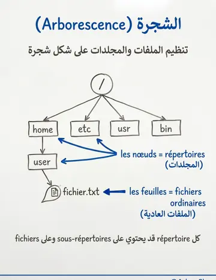
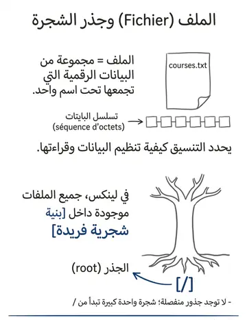
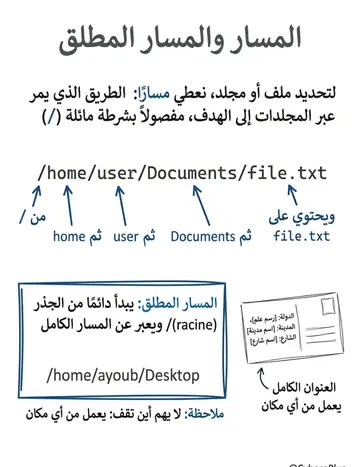
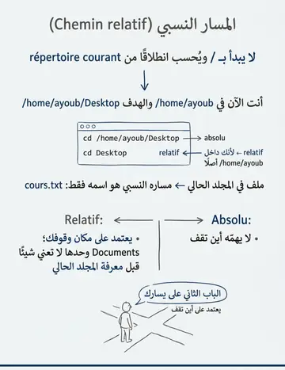
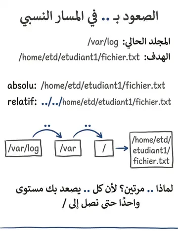
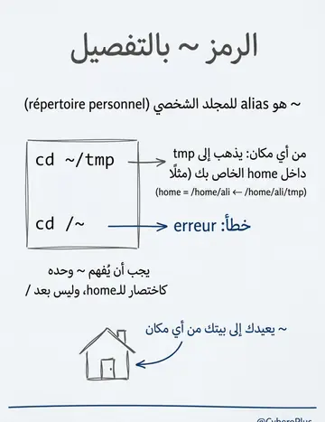
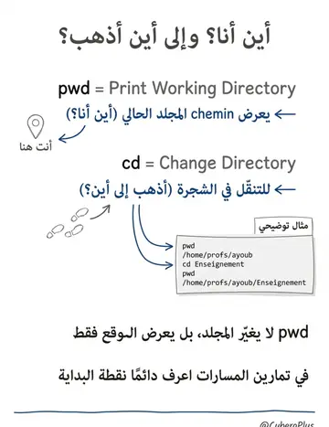
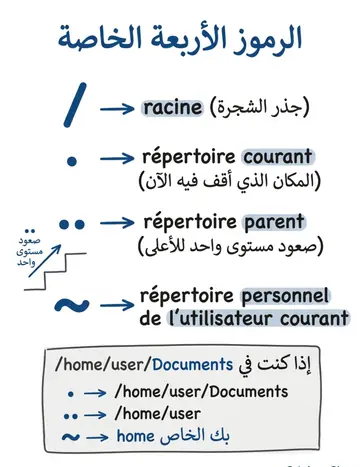
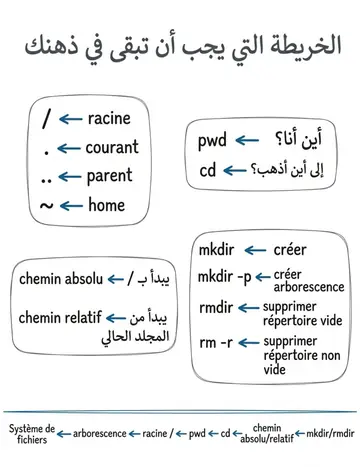
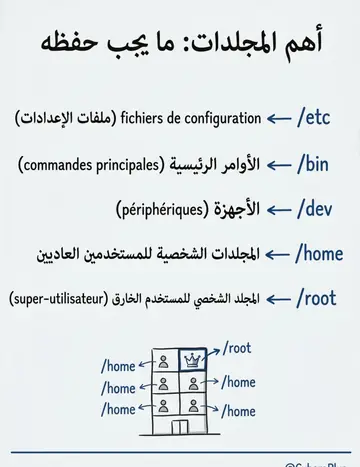
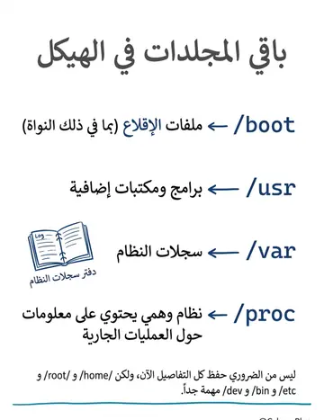
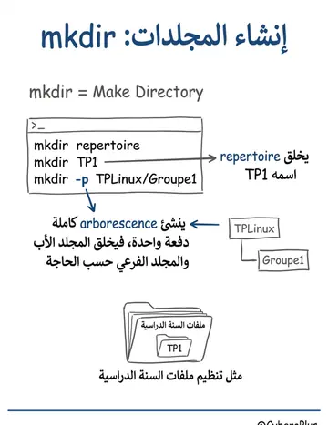
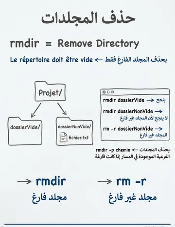
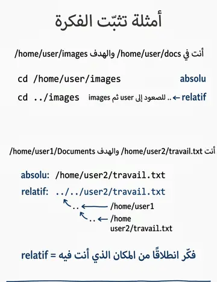
Contenu du cours
Pages 92–114 · texte intégral du support
GESTION DES FICHIERS ET
DES RÉPERTOIRES
Mémoire vive
Répertoires d’arrangement
Fichiers de stockage
SYSTÈMES DE FICHIERS
Un système de fichier est l'agencement logique et structuré des données sur un support de stockage.
Supports courants :
Disque dur
Clé USB
• DVD
Autres supports de stockage numériques
Fonctionnement :
Les informations ne sont pas écrites aléatoirement sur les disques.
Une organisation spécifique est nécessaire pour stocker à la fois les fichiers et les données qu'ils contiennent.
C'est le système de fichiers qui définit cette structure et permet de gérer les fichiers de manière efficace.
Exemples de systèmes de fichiers :
ext4 (Linux)
NTFS (Windows)
• FAT32 (USB, DVD)
SYSTÈMES DE FICHIERS
Un fichier est un ensemble de données numériques regroupées sous un même nom.
Ces données peuvent être enregistrées sur différents supports (disques durs, SSD, etc.) et leur méthode de stockage suit un format spécifique.
Caractéristiques techniques d’un fichier :
Information numérique constituée d'une séquence d'octets.
Le format du fichier définit la manière dont les données sont organisées et interprétées.
Organisation des fichiers dans Linux :
Tous les fichiers sont structurés selon une arborescence unique.
Le point de départ de cette structure est appelé racine (représentée par « / »).
SYSTÈMES DE FICHIERS
SYSTÈMES DE FICHIERS
Structure hiérarchique :
Un point de départ : le répertoire racine ("root").
Des sous-répertoires imbriqués, organisés de manière logique.
Exemple de structure :
/ (root)
/home
/usr
/etc
/bin
Une arborescence est une organisation logique des fichiers sur un ou plusieurs systèmes de fichiers.
Un répertoire est une structure qui permet de ranger et organiser les fichiers.
Fonction principale : Organisation des fichiers en groupes logiques.
Création : Il est possible de créer plusieurs répertoires pour classer les fichiers selon leur utilité.
Équivalent : Folder ou Collection dans d'autres systèmes d'exploitation.
SYSTÈMES DE FICHIERS
Racine de l’arborescence
Répertoire
Sous-Répertoire
Fichier
Le système de fichiers est organisé en une structure arborescente dont les nœuds sont des répertoires et les feuilles des fichiers ordinaires.
SYSTÈMES DE FICHIERS
ARBORESCENCE LINUX
/ etc bin boot dev home root usr var proc
Racine du système
Fichiers de configuration
Commandes principales disponibles
Fichiers de démarrage du système contenant le noyau
Point de montage des périphériques
Répertoires personnels des utilisateurs
Répertoire personnel du super-utilisateur
Logiciels et librairies supplémentaires
Journaux systèmes (log)
Système de fichiers virtuel (VFS) contenant des infos sur les processus en cours d’exécution nnée
1iv1e4rsi aire
ARBORESCENCE TYPIQUE DE LINUX
Différents symboles sont utilisés pour
désigner des répertoires :
Le « . »
→Répertoire courant
Le « .. » →Répertoire parent
Le « ~ » →Répertoire personnel de l’utilisateur courant
Le « / » →Répertoire racine de l’arbre nnée
1iv1e5rsi aire
SYMBOLES ASSOCIÉS À L’ARBORESCENCE
Le système Linux offre trois types de fichiers principaux :
a.
Les fichiers ordinaires (regular files).
b.
Les fichiers répertoires ou répertoires (directories).
c.
Les fichiers spéciaux. Ils désignent les périphériques, les tubes ou autres supports de communication.
❑Les fichiers spéciaux sont de plusieurs types, à savoir :
l
: un lien symbolique
b
: un fichier spécial de type bloc (périphériques …)
c
: un fichier spécial de type caractère (périphériques …)
s
: socket
…
LES TYPES DE FICHIERS LINUX
Le terminal interprète le caractère tilde ~ comme un alias du répertoire personnel, mais le tilde ne doit être précédé d’aucun caractère.
Exemple: Pour vous déplacer dans le répertoire tmp de votre dossier personnel d’où que
vous soyez :
$ cd ~/tmpMais la commande ci- dessous, génère une erreur :
$ cd /~LES RÉPERTOIRE PERSONNEL – LE TILDE
La commande permettant d’afficher le chemin d’accès du répertoire courant
(C’est-à-dire votre position dans l’arborescence) est:
Pwd : Print Working Directory
COMMANDE DE MANIPULATION DES
RÉPERTOIRES
COMMANDE DE MANIPULATION DES
RÉPERTOIRES
On peut se déplacer en utilisant un chemin :
cd chemin% pwd% cd Enseignement% pwdLa commande permettant de se déplacer dans une arborescence est :
cd repertoire (change directory)
COMMANDE DE MANIPULATION DES
RÉPERTOIRES
Pour identifier un fichier dans l'arborescence, on indique le nom complet du fichier
Le nom complet du fichier est représenté par :
Le chemin composé de répertoires qui conduit de la racine de l'arborescence du système de fichiers jusqu'au répertoire qui contient le fichier.
Chaque répertoire est distingué des autres par un symbole séparateur "/".
Le nom du fichier.
COMMANDE DE MANIPULATION DES
RÉPERTOIRES : LES CHEMINS D’ACCÈS
On distingue deux expressions d'un chemin :
Le chemin d'accès absolu (chemin absolu)
Le chemin absolu commence par le symbole séparateur /, il exprime le chemin complet à partir de la racine de l'arborescence.
Le chemin d'accès relatif (chemin relatif)
Le chemin relatif commence par un autre caractère que le caractère séparateur. Il indique un chemin à partir du répertoire de travail courant.
COMMANDE DE MANIPULATION DES
RÉPERTOIRES
Exemple :
Le répertoire courant est : /var/log
Le chemin absolu pour désigner le
fichier fichier.txt est:
/home/etd/etudiant1/fichier.txt
Le chemin relatif est :
../../home/etd/etudiant1/fichier.txt
".." désigne le répertoire parent
"." désigne le répertoire courant
COMMANDE DE MANIPULATION DES
RÉPERTOIRES : LES CHEMINS D’ACCES
Voici par exemple l'utilisation de cd pour aller dans le
bureau à l'aide d'un chemin absolu:
Voici la même commande mais en utilisant un chemin relatif.
$ pwd$ cd DesktopCOMMANDE DE MANIPULATION DES
RÉPERTOIRES : LES CHEMINS D’ACCÈS
COMMANDE DE MANIPULATION DES
RÉPERTOIRES : LES CHEMINS D’ACCÈS
COMMANDE DE MANIPULATION DES
RÉPERTOIRES
La commande servant à créer des répertoires est :
mkdir [options] répertoires… (make directory)
pour créer une arborescence entière, on utilise l’option –p
Exemple : créer l’arborescence
~/TPLinux/Groupe1
mkdir –p TPLinux/Groupe1La commande servant à supprimer un répertoire est :
rmdir repertoire
(remove directory) Le répertoire doit être vide
rmdir -p repertoire : pour supprimer les sous répertoires qui peuvent figurer dans le chemin d’accès à un répertoire s’ils sont vides.
rm -r repertoire : Si le répertoire est non vide
LA COMMANDE DU
La commande du : permet d’afficher la taille d’une arborescence.
Syntaxe : du [options] [répertoire]
Option description
-a
Affiche les statistiques pour tous les fichiers, pas seulement les répertoires.
-b
Affiche les tailles en octets.
-c
Affiche la totalité de l'espace utilisé par tous les arguments.
-k
Affiche la taille en kilo-octets.
-S
Affiche séparément la taille de chaque répertoire, sans inclure la taille des sous-répertoires.